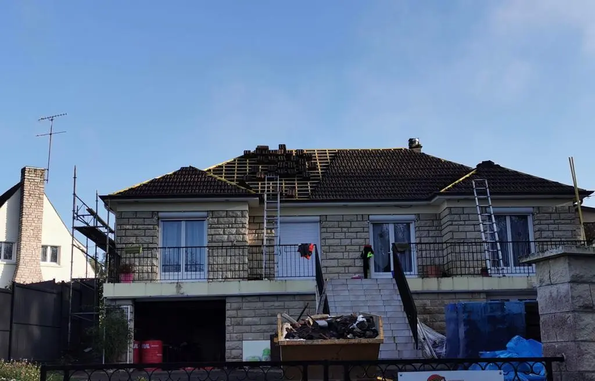
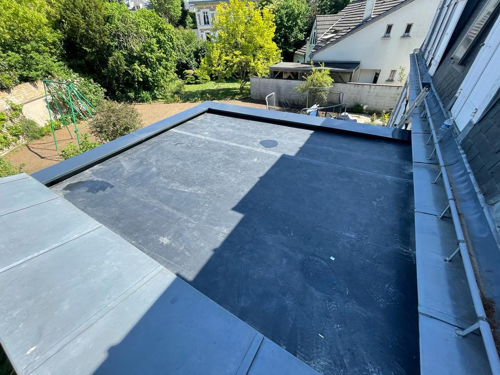

Réparation toiture à Bailleau-l'Évêque : Assurez la protection de votre habitation à Bailleau-l'Évêque grâce à notre service de réparation de toiture. Remplacement de tuiles, colmatage de fuites ou réfection partielle, chaque intervention est réalisée avec réactivité pour garantir l'étanchéité de votre toit.

Couvreur Bailleau - Nettoyage toiture - Réparation toiture Bailleau-l'Évêque
DEVIS GRATUITNOS SERVICES

À Bailleau-l'Évêque, réparer une toiture rapidement permet d'éviter les infiltrations et de préserver durablement votre habitation. Que ce soit pour changer des tuiles cassées, boucher une fuite ou remettre à neuf des éléments usés, nos couvreurs interviennent efficacement pour garantir une toiture étanche et bien isolée.
EN SAVOIR PLUS
Le démoussage de toiture à Bailleau-l'Évêque est indispensable pour éliminer mousses, lichens et saletés qui fragilisent votre couverture. En nettoyant régulièrement votre toit, vous préservez son apparence, son étanchéité et sa longévité.
EN SAVOIR PLUS
À Bailleau-l'Évêque, améliorer l’isolation de votre toiture permet de réduire les pertes de chaleur et de faire des économies d’énergie. Une toiture bien isolée assure un confort optimal hiver comme été, tout en augmentant la valeur de votre maison.
EN SAVOIR PLUS
Protégez votre maison à Bailleau-l'Évêque avec une étanchéité de toiture efficace. Nos solutions préviennent les infiltrations d’eau et l’humidité, assurant une protection durable contre les intempéries et les dégradations structurelles.
EN SAVOIR PLUS
Redonnez une nouvelle jeunesse à votre toit à Bailleau-l'Évêque grâce à la peinture de toiture. En plus d’embellir, elle protège contre les UV, les mousses et l’humidité, prolongeant ainsi la durée de vie de votre couverture.
EN SAVOIR PLUS
À Bailleau-l'Évêque, nous assurons la pose de gouttières zinc ou PVC pour une gestion optimale des eaux pluviales. Un bon système d’évacuation protège efficacement votre toiture, vos murs et vos fondations.
EN SAVOIR PLUS
Apportez de la lumière à vos combles à Bailleau-l'Évêque avec la pose de fenêtres de toit Velux. Ces ouvertures modernes améliorent la ventilation, le confort et la performance énergétique de votre habitation.
EN SAVOIR PLUS
À Bailleau-l'Évêque, offrez un coup de neuf à votre façade avec nos services de peinture extérieure. En plus de valoriser votre bien, elle protège contre l’humidité, les fissures et les intempéries.
EN SAVOIR PLUS
En cas d’urgence toiture à Bailleau-l'Évêque, notre équipe réagit rapidement pour localiser et stopper les fuites. Nous intervenons en express afin de limiter les dégâts et protéger efficacement votre intérieur.
EN SAVOIR PLUS
Nettoyage et démoussage de toiture à Bailleau-l'Évêque : Entretenez votre toiture à Bailleau-l'Évêque pour prévenir les dégradations causées par les mousses, algues et lichens. Un nettoyage professionnel améliore la longévité et l’apparence de votre couverture.
Isolation toiture à Bailleau-l'Évêque : Profitez d’un confort thermique optimal à Bailleau-l'Évêque grâce à notre expertise en isolation de toiture. Nos solutions réduisent vos dépenses énergétiques et améliorent l'efficacité de votre logement.
Étanchéité toiture à Bailleau-l'Évêque : Garantissez une protection totale de votre toiture à Bailleau-l'Évêque contre les infiltrations. Nous appliquons des techniques modernes et des matériaux durables pour renforcer l’étanchéité de votre toit.
Peinture toiture à Bailleau-l'Évêque : Donnez une nouvelle vie à votre toit à Bailleau-l'Évêque grâce à notre service de peinture de toiture. En plus d’un aspect esthétique renouvelé, votre toiture sera protégée contre les UV et l’humidité.
Pose de gouttières à Bailleau-l'Évêque : Une évacuation efficace des eaux de pluie à Bailleau-l'Évêque est essentielle. Nos gouttières en zinc ou PVC sont posées avec précision pour protéger vos façades et vos fondations.
Pose de fenêtres de toit à Bailleau-l'Évêque : Offrez plus de lumière naturelle et une ventilation optimale à vos combles à Bailleau-l'Évêque avec nos installations Velux. Une pose professionnelle garantit isolation et étanchéité.
Réparation de fuite de toiture à Bailleau-l'Évêque : Une fuite sur votre toit à Bailleau-l'Évêque ? Nous intervenons en urgence pour stopper les infiltrations et éviter des dégâts plus importants. Tuiles, joints ou raccords, nous traitons toutes les causes.
Peinture de façade à Bailleau-l'Évêque : Offrez une seconde jeunesse à votre façade à Bailleau-l'Évêque avec notre service de peinture extérieure. Esthétique et protectrice, elle valorise votre bien tout en le préservant des agressions climatiques.
DES COUVREURS EXPÉRIMENTÉS ET DU MATÉRIEL PROFESSIONNEL À BAILLEAU-L'ÉVÊQUE
Notre entreprise de couverture intervient à Bailleau-l'Évêque avec une équipe qualifiée et des équipements modernes, pour répondre à tous vos besoins : réparation de toiture, nettoyage, isolation, étanchéité, peinture, gouttières ou encore pose de Velux. Chaque intervention est réalisée avec soin afin de garantir des résultats durables et performants.
NETTOYAGE DE TOITURE EN PROMO À BAILLEAU-L'ÉVÊQUE

TRAITEMENT ANTI-MOUSSE ET HYDROFUGE AVEC DALEP 2100
Bénéficiez de notre offre exceptionnelle : nettoyage de toiture à partir de 7€/m² avec traitement hydrofuge offert ! Nous utilisons le produit DALEP 2100 pour un résultat impeccable sur votre toiture à Bailleau-l'Évêque, durablement protégée contre les mousses.
DES PRIX ATTRACTIFS POUR VOS TRAVAUX À BAILLEAU-L'ÉVÊQUE
Nos prestations à Bailleau-l'Évêque sont adaptées à votre budget tout en garantissant une qualité professionnelle. Obtenez votre devis gratuit en ligne ou contactez-nous au 01 84 24 48 58.
DEVIS GRATUITUNE ENTREPRISE DE CONFIANCE POUR VOTRE TOITURE À BAILLEAU-L'ÉVÊQUE
En faisant appel à notre entreprise à Bailleau-l'Évêque, vous bénéficiez d'un savoir-faire reconnu en Eure-et-Loir. Pour toute réparation, isolation, entretien ou peinture de façade, notre équipe garantit un travail minutieux et durable.
TRAVAUX COUVERTS PAR UNE GARANTIE DÉCENNALE À BAILLEAU-L'ÉVÊQUE

Tous nos travaux à Bailleau-l'Évêque sont assurés par une garantie décennale de 10 ans. Vous avez l’assurance d’une réalisation conforme aux normes en vigueur.
UN CONTRAT D’ENTRETIEN POUR VOTRE TOITURE À BAILLEAU-L'ÉVÊQUE

ENTRETIEN PERSONNALISÉ ET INTERVENTIONS RÉGULIÈRES
Nos formules de contrat d’entretien à Bailleau-l'Évêque sont conçues pour prolonger la durée de vie de votre toiture. Nettoyage, vérification, réparation ou amélioration de l’isolation : nous assurons un suivi complet.
POTIER COUVREUR : EXPERT DE LA TOITURE À BAILLEAU-L'ÉVÊQUE
Depuis plus de deux décennies, nous accompagnons les particuliers et les professionnels de Bailleau-l'Évêque pour leurs travaux de couverture. Intervention rapide, devis clairs et travail soigné.
Remplacement de tuiles, étanchéité, pose de Velux, nettoyage ou gouttières, nous prenons en charge votre toiture de A à Z.
Disponibilité 24h/24 et 7j/7, y compris le week-end. Nos prestations à Bailleau-l'Évêque couvrent également la rénovation, l’isolation et les entretiens préventifs pour une toiture durable.
NOS VALEURS
QUALITÉ
UNE EXIGENCE CONSTANTE
Chaque chantier à Bailleau-l'Évêque est l’objet d’un contrôle rigoureux pour garantir une finition parfaite et durable.
PASSION
L’AMOUR DU MÉTIER
Notre passion pour la couverture se ressent à travers chaque projet à Bailleau-l'Évêque. Nous donnons le meilleur pour satisfaire nos clients.
ENGAGEMENT
RESPECT DES DÉLAIS
Nous assurons une exécution rapide et propre de vos travaux à Bailleau-l'Évêque, dans le respect de vos attentes et de votre espace.
CONFIANCE
UNE RELATION DURABLE
Avec transparence et honnêteté, nous construisons une relation de confiance avec chaque client de Bailleau-l'Évêque.